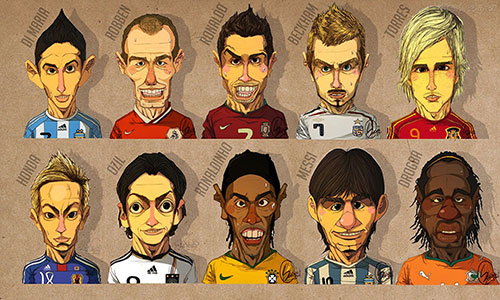

Ronaldo Luís Nazário de Lima, mais conhecido como Ronaldo, Ronaldo Fenômeno ou ainda Ronaldinho (Rio de Janeiro, 22 de setembro de 1976), é um ex-futebolista brasileiro que atuava como atacante. É considerado por especialistas e fãs - entre eles, o craque sueco Zlatan Ibrahimović - como um dos maiores jogadores de futebol de todos os tempos. Já era conhecido como Ronaldo no início da carreira, sendo por algum tempo chamado de Ronaldinho. O diminutivo surgiu na Copa do Mundo de 1994, quando a Seleção Brasileira foi com dois Ronaldos; o mais velho, jogador do São Paulo, tornou-se Ronaldão. Já o apelido de Fenômeno surgiu na imprensa italiana, na época em que ele defendia a Internazionale.
Ricardo Izecson dos Santos Leite (Gama, DF, 22 de abril de 1982), mais conhecido como Kaká, é um futebolista brasileiro que joga como meia. Atualmente, defende o Orlando City. No ano de 2007, durante o auge de sua carreira, foi o ganhador dos prêmios de melhor jogador do mundo pela FIFA e pelo Ballon d'or, entregue pela revista francesa France Football, premiações que posteriormente foram unificadas. Em 2008, foi eleito uma das personalidades mais influentes do ano no mundo pela Time 100.Kaká sempre foi habitualmente convocado à Seleção Brasileira.
Neymar da Silva Santos Júnior (Mogi das Cruzes, 5 de fevereiro de 1992), geralmente referido como Neymar ou Neymar Jr., é um futebolista brasileiro, que atua como atacante ou ponta. Atualmente defende o Barcelona e a Seleção Brasileira, na qual é capitão da equipe. Revelado pelo Santos em 2009, Neymar se tornou no principal futebolista em atividade no país. Em 2013 foi vendido ao Barcelona em alta, após ser protagonista da conquista da Copa das Confederações FIFA 2013 pelo Brasil. Ao lado de Messi, Iniesta, Xavi, Daniel Alves e Luis Suárez, Neymar conquistou a Liga dos Campeões da UEFA 2014/15 e se transformou no principal futebolista brasileiro e um dos principais futebolistas do mundo. Em 2015 foi finalista do prêmio Bola de Ouro da FIFA (melhor jogador do mundo).
Lionel Andrés Messi (Rosário, 24 de junho de 1987) é um futebolista argentino que atua como atacante ou meia ofensivo. Atualmente, joga pelo Barcelona e pela Seleção Argentina, equipe a qual é capitão desde o segundo semestre de 2011. Na opinião da grande maioria dos especialistas do esporte, sua qualidade técnica, jogadas, velocidade, habilidade na perna esquerda, trabalho de equipe e extraordinária vocação para o gol, o tornam o melhor futebolista do mundo atualmente. Os europeus desde já o comparam aos grandes nomes da história do futebol, como Pelé, Tostão, Garrincha, Di Stéfano, Maradona, Puskás ou Cruijff, o colocando como 2º maior jogador de todos os tempos atrás somente de Pelé. Seus feitos com a camisa do Barcelona o levaram a arrebatar por cinco vezes (2009, 2010, 2011, 2012 e 2015) o Ballon d'Or, oferecido pela revista francesa especializada France Football, a mais tradicional premiação do futebol mundial, que a partir de 2011 passou a denominar-se Bola de Ouro da FIFA. Em março de 2012, com apenas 24 anos, Messi se tornaria o maior artilheiro da história do Barcelona, superando o ídolo do clube catalão nas décadas de 1940 e 1950, César Rodríguez.[5] Ao marcar o seu 91º gol em dezembro de 2012, em partida contra o Valladolid (Barcelona 3-1), Messi superou o recorde de gols num só ano no futebol mundial, considerando apenas partidas oficiais disputadas com a camisa do Barcelona e Seleção Argentina.
Criador:Rodrigo Jacinto da silva
Sites:Wikipedia,fifa,uefa